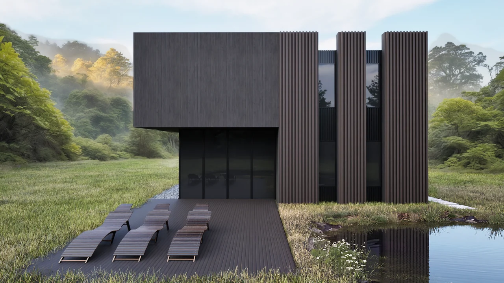

Oleksandr
Riznyk
3D visualizer and interior designer. Bachelor of Architecture with 2+ years in-house at a furniture factory and a development company.
Based in Poland. Open to remote work for teams in the EU, US and Ukraine.
Choose the role you are hiring for

 ClayFinal
ClayFinal
Drag the handle or use the arrow keys to compare.
Selected projects
Quiet luxury bedroom
Bed modeling, scene, materials, lighting, rendering, cinematic camera motion. The nightstand model was supplied.

Travertine kitchen
Kitchen interior concept and modeling, materials, lighting, rendering, cinematic camera motion. The stool model was supplied.

Living room with a garden view
Interior concept and scene: layout, materials, lighting, rendering. The furniture models were supplied.

FRANKOF showroom
Showroom planning: zoning for collections, furniture layout and planograms, partitions and display elements, documentation for installation. Photos of the built showroom: FRANKOF.

Attic apartment
Interior concept and visualization: zoning, materials and finishes, furniture and lighting selection, rendering. Working drawings were outside my part.

Office
Interior concept and visualization: zoning, materials, furniture, rendering. Working drawings were outside my part.

Cottage
Concept and visualization: modeling, materials, landscape, lighting, rendering, cinematic camera motion.
Experience
CG Artist / 3D Designer
- Created photorealistic interior and product visualizations of furniture for marketing and sales materials.
- Took part in developing new furniture products: created chair concepts and 3D models.
- Designed furniture showroom interiors with functional zones for different collections, from concept and visualization to technical drawings.
Interior Designer / 3D Visualizer
- Developed interior design concepts for residential and commercial spaces, from first idea to visual presentation.
- Produced photorealistic visualizations of residential and commercial interiors with a focus on materials, lighting, composition and atmosphere.
Education
Bachelor of Architecture
Languages
Ukrainian (native), English (B1), Polish (A2)